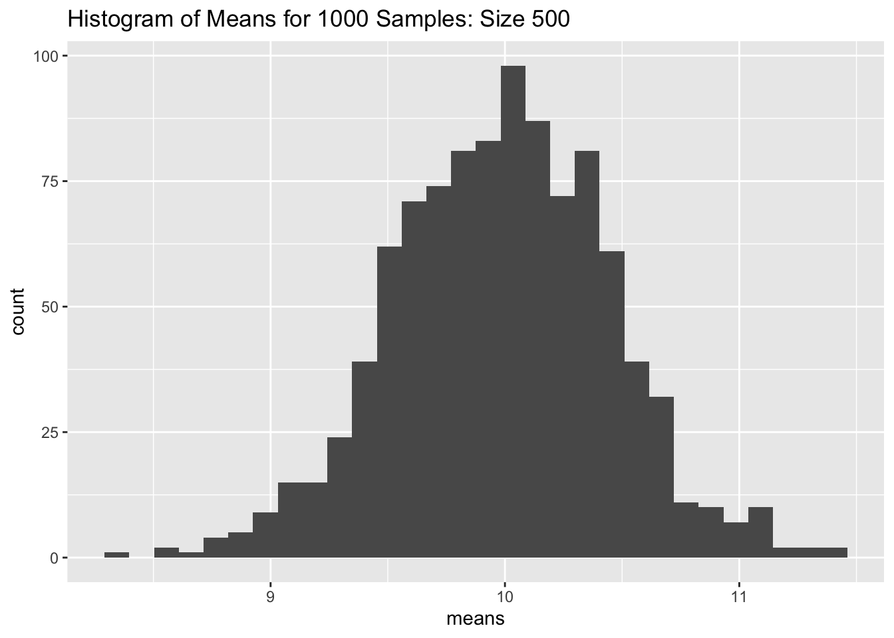

Simulation Project 1: The Robustness of One-Sample Estimation Procedures
Part 1
Question 1
Based on this histogram of means of 1000 samples (of size 5, 10, 30, 100, and 500) from a normal population. I put them in ascending order so that we can see that the center becomes closer and closer to the true population mean of 10. We can also see that the spread gets smaller as our sample sizes get larger. The shape to begin is a bell curve, but becomes closer and closer to a normal bell curve as the sample size increases.
Obtain 1000 samples from the normal population (“Population 1”) and record the sample mean (mean()) and standard deviation (sd()) for each. Create a histogram (hist()) of the sample means and comment on what you observe (specifically, center, spread, and shape). Comment also on how things change as you increase the sample size (n). Using the population standard deviation, (), compute 1000 instances of (). Create a histogram of these values and comment on what you observe. Comment also on how things change as you increase the sample size (n). Now using the sample standard deviations, compute 1000 instances of (). Create a histogram of these values and comment on what you observe. Comment also on how things change as you increase the sample size (n). Create a histogram of the 1000 sample standard deviations and comment on what you observe. Comment also on how things change as you increase the sample size (n). Using a significance level of 0.05, how many of the 1000 samples reject the null hypothesis (H_0: = 10) (with a two-sided alternative) if you were to (1) use the population standard deviation () and a critical value based on the normal distribution (i.e., use 1.96), (2) use the sample standard deviation (s) and critical value based on the normal distribution (i.e., use 1.96), and (3) use the sample standard deviation (s) and critical value based on the t-distribution (how many degrees of freedom would this be?). Create a table that shows the results across the different sample sizes.
library(ggplot2)library(dplyr)# Make results reproducibleset.seed(5771)#NOTE: I just reused this for every sample size and changed the title in the ggplot # Define sample sizen <-500# you'll also try 10, 30, 100, and 500# Simulate datasets from different populations with the same mean and standard deviationmu <-10sigma <-10# Population 1: normal#getting the datanormal_data <-replicate(1000, rnorm(n, mean = mu, sd = sigma))#taking the means and turning into a dfnormal_means <-data.frame(colMeans(normal_data))#changing the name of the columncolnames(normal_means)[1] <-"means"#taking the sd of the dataggplot(data = normal_means) +geom_histogram(aes(x = means)) +labs(title ="Histogram of Means for 1000 Samples: Size 500")

normal_sd <-apply(normal_data, 2, sd) # Population 2: skewed distributionskewed_data <-replicate(1000, rgamma(n, shape = mu^2/sigma^2, scale = sigma^2/mu))skewed_means <-colMeans(skewed_data)skewed_sd <-apply(skewed_data, 2, sd)# Population 3: uniform distributionunif_data <-replicate(1000, runif(n, min =0, max =2*mu))unif_means <-colMeans(unif_data)unif_sd <-apply(unif_data, 2, sd)